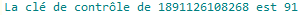

★ Le numéro de sécurité sociale est constitué de 13 chiffres auquel s'ajoute la clé de contrôle (2 chiffres).
Exemple : 1 89 11 26 108 268 91
La clé de contrôle est calculée par la formule : 97 - (numéro de sécurité sociale modulo 97)
Retrouver la clé de contrôle de votre numéro de sécurité sociale.
Quel est l'intérêt de la clé de contrôle ?

Créé avec HelpNDoc Personal Edition: Qu'est-ce qu'un outil de création d'aide ?